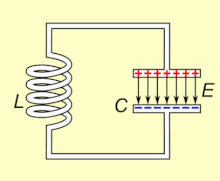

This comprehensive course explores the principles and applications of Radio Frequency Identification (RFID) and Passive Integrated Transponder (PIT) tag technology, focusing on fisheries science. Designed for students with limited physics backgrounds, the course demystifies the technology by providing detailed explanations and practical examples. Students will gain a deep understanding of electromagnetic principles, communication methods—including Half Duplex (HDX) and Full Duplex (FDX)—system components like antenna design and LC circuits, and practical considerations involved in deploying PIT tags for fish monitoring and research.
Course Objectives
Grasp fundamental concepts of RFID and PIT tag technology.
Understand electromagnetic principles relevant to RFID systems.
Examine various communication techniques used in RFID, including HDX and FDX.
Analyze the design and functionality of PIT tag systems, emphasizing antenna design and LC circuits.
Assess the applications, limitations, and ethical considerations of PIT technology in fisheries.
Articulate the physics and science behind PIT tagging in an accessible manner.
Section 1: Introduction to RFID and PIT Tag Technology
1.1 Overview of RFID Systems
Radio Frequency Identification (RFID) is a technology that uses electromagnetic waves to automatically identify and track objects. Just as visible light allows us to see and identify objects around us, RFID uses radio waves—another form of electromagnetic radiation—to detect and read information from tags attached to objects. An RFID system consists of three main components: tags, readers, and antennas.
The tags, also known as transponders, are small devices that store data, typically a unique identification number. The reader, or interrogator, sends out electromagnetic waves through its antenna to power and communicate with the tag. The tag's antenna receives this energy and uses it to transmit its stored information back to the reader. RFID systems operate across various frequency ranges, each with unique properties affecting read range and data transfer rates. Low-frequency (LF) systems, operating around 125–134.2 kHz, are commonly used for animal tracking, including PIT tags in fisheries.
1.2 Evolution of PIT Tags
Passive Integrated Transponder (PIT) tags are a specialized type of RFID tag that are passive—they have no internal power source. They rely entirely on the energy transmitted by the reader's electromagnetic field, making them lightweight and durable. PIT tags were developed in the 1980s to provide a reliable method for long-term identification of individual animals. Advances in microelectronics and materials science have led to the miniaturization of PIT tags, enabling their use in small fish species without impacting their health. Modern PIT tags are encapsulated in biocompatible materials like glass or medical-grade polymers to prevent adverse reactions when implanted.
Operating at 134.2 kHz, a low frequency that allows effective communication even in challenging environments like water, PIT tags can be detected at ranges up to 1 meter (approximately 3 feet). This range is practical for monitoring fish movements in natural habitats.
1.3 Applications in Fisheries
In fisheries science, PIT tags are extensively used for monitoring and studying fish populations. They allow researchers to individually identify fish over long periods, facilitating studies on growth rates, survival, migration patterns, and habitat use. By implanting PIT tags in fish, data can be collected without the need to recapture or handle the fish repeatedly, minimizing stress and potential harm.
For example, researchers studying salmon migration install fixed detection stations along rivers to automatically record tagged fish as they pass. This data provides valuable insights into migration timing, route selection, and survival rates. Such information is crucial for understanding the impacts of environmental changes, habitat alterations, and conservation measures on fish populations.
Section 2: Electromagnetic Principles in RFID
2.1 Fundamentals of Electromagnetism
Electromagnetism is the branch of physics that deals with the study of electric and magnetic fields and their interactions with matter. Electromagnetic waves encompass a broad spectrum, including visible light, radio waves, microwaves, infrared, ultraviolet, X-rays, and gamma rays. All these are fundamentally the same phenomenon—oscillations of electric and magnetic fields—but differ in frequency and wavelength.
The electromagnetic spectrum can be thought of as a rainbow that extends beyond the colors we can see with our eyes. Visible light occupies a small portion of this spectrum, with wavelengths ranging from approximately 400 to 700 nanometers (nm). Radio waves, used in RFID systems, have much longer wavelengths, ranging from millimeters to kilometers.
In PIT systems, the reader emits electromagnetic waves that interact with the tag. The behavior of these waves is governed by Maxwell's equations, which describe how electric and magnetic fields are generated and altered by each other and by charges and currents. Faraday's Law tells us that when a magnetic field changes over time, it generates an electric field. Ampère's Law says that a changing electric field produces a magnetic field.
When these two principles work together, they create self-propagating electromagnetic waves. As the electric field changes, it creates a magnetic field, and as the magnetic field changes, it creates an electric field. This process keeps repeating, allowing the wave to travel through space without needing any material to move through (like air or water). This is how electromagnetic radiation (like light, radio waves, and microwaves) can travel through the vacuum of space.
Electromagnetic Wave Analogy: The Stadium Wave
Imagine a stadium filled with people sitting in a large circle, representing points in space. Each person symbolizes the electric and magnetic fields at their location. Instead of physically moving, the people oscillate by standing and sitting, representing the changing electric field, while waving their arms side to side represents the magnetic field. As the wave passes, the electric field rises (standing) and falls (sitting), while the magnetic field oscillates perpendicularly (waving arms).
The wave moves through the stadium, but the people (fields) stay in place—just as electromagnetic waves propagate through space without the physical movement of matter. The oscillating electric and magnetic fields sustain each other, allowing the wave to travel continuously through space. The frequency of the wave depends on how quickly people stand and sit (oscillate), while the wavelength relates to the spacing between them.
Before we dive into how a PIT tag system works, let’s define some key terms:
Electromotive Force (EMF): The voltage generated by a change in magnetic flux, which drives current in a circuit. This is what powers the PIT tag when it enters the magnetic field of the reader.
Inductance (L): A property of a coil (or inductor) that quantifies its ability to store energy in a magnetic field as current flows through it. The more turns in the coil and the larger its area, the higher the inductance.
Capacitance (C): Capacitance is the ability of a component, known as a capacitor, to store electrical energy in the form of an electric charge. It is defined as the amount of charge a capacitor can store per unit of voltage applied across its plates. The unit of capacitance is the farad (F).
Resonance: When a system oscillates at a particular frequency, known as its natural frequency. In the case of PIT tags, resonance occurs when the inductive and capacitive components of a circuit work together to maximize energy transfer.
Mutual Inductance (M): The ability of one coil to induce an EMF in another coil when their magnetic fields interact. This is the principle that allows the reader to wirelessly transfer energy to the PIT tag.
LC Circuit: A circuit consisting of an inductor (L) and a capacitor (C) that can resonate at a specific frequency, defined by the values of L and C. This is the backbone of both the reader and PIT tag’s operation.
Section 3: LC Circuits in PIT Tag Technology
An LC circuit consists of an inductor (L) and a capacitor (C) connected together. These circuits are fundamental to RFID and PIT tag systems because they resonate at specific frequencies, enabling efficient energy transfer between the reader and the tag.
3.1 How LC Circuits Work
LC circuits oscillate by transferring energy between the electric field of the capacitor and the magnetic field of the inductor. When the capacitor discharges, it sends current through the inductor, generating a magnetic field. As the magnetic field collapses, it induces current back into the capacitor, recharging it. This repeated energy transfer creates a continuous oscillation, with the frequency determined by the values of L (inductance) and C (capacitance).
The resonant frequency of an LC circuit is given by the formula:
Where:
ùëì0 is the resonant frequency in Hertz (Hz).
ùêø is the inductance in Henries (H).
ùê∂ is the capacitance in Farads (F).
3.2 How the Inductor and Capacitor Work Together
In the LC circuit, the inductor and capacitor perform complementary functions:
Inductor (L): Stores energy in a magnetic field when current flows through it. As the current decreases, the inductor releases the stored energy to maintain the current flow.
Capacitor (C): Stores energy in an electric field when current charges its plates. As the capacitor discharges, it drives current through the inductor.
This interaction creates a "counterbalance" effect:
The capacitor charges up, storing energy.
The capacitor discharges, sending current through the inductor, creating a magnetic field.
The inductor stores this energy, and as the current drops, it sends the energy back to the capacitor.
This back-and-forth energy exchange causes the circuit to resonate at its natural frequency. In PIT tag systems, this oscillation at 134.2 kHz is essential for efficient energy harvesting from the reader’s magnetic field.

The reservoir (capacitor) stores potential energy (charge) by holding back water (electric charge) behind the dam.
The turbine (inductor) resists the sudden flow of water (current), gradually building up its momentum and keeping the current steady as the water flows through.
When you release water from the reservoir, it flows through the turbine, generating energy. Similarly, in a circuit, the capacitor discharges stored charge, and the inductor regulates and smooths the flow of current as energy is transferred.
In a hydroelectric dam system, the reservoir stores water (like a capacitor stores charge), and the turbine controls and stabilizes the flow of water (like an inductor controls current).
3.3 The PIT Tag’s LC Circuit: Resonance for Efficient Power Transfer
Both the reader and the PIT tag contain LC circuits tuned to the same frequency of 134.2 kHz. When the reader emits a magnetic field, the tag’s LC circuit resonates with this field, maximizing energy transfer. This allows the tag to harvest enough energy to power its microchip, enabling it to transmit data back to the reader.
Resonance is vital in passive PIT tags because it enables the tag to function without a battery, relying entirely on energy harvested from the reader.
3.4 LC Circuits in Antenna Design
In RFID and PIT tag technology, the antenna coil serves as the inductor in the LC circuit. A capacitor is added to form a resonant circuit, tuned to the operating frequency of 134.2 kHz.
By adjusting the values of inductance and capacitance, the circuit can be fine-tuned to resonate at this frequency. Resonance enhances energy transfer between the reader and the tag, maximizing the current flowing through the antenna coil and ensuring effective communication.
3.5 Effect of Changing Inductance and Capacitance
Changing the values of inductance or capacitance alters the resonant frequency of the circuit:
Increasing Inductance (L): Lowers the resonant frequency. A higher inductance slows the oscillation of the circuit, similar to how a heavier pendulum swings more slowly.
Decreasing Inductance (L): Raises the resonant frequency, as the circuit oscillates more quickly with less opposition to current changes.
Increasing Capacitance (C): Lowers the resonant frequency, as a larger capacitor takes longer to charge and discharge, slowing down the oscillations.
Decreasing Capacitance (C): Raises the resonant frequency, allowing the circuit to oscillate faster.
3.6 Practical Implications in PIT Tags
Proper tuning of the LC circuit is essential for optimizing the performance of PIT tag systems. Deviations from the resonant frequency can lead to:
Off-Resonance: Reduced energy transfer between the reader and tag.
Reduced Read Range: Poor resonance leads to weaker signals, reducing the effective communication range.
Signal Distortion: Mismatched resonance can cause errors in data transmission.
Maintaining precise values for L and C ensures efficient operation in the field, enabling the PIT tag to harvest enough energy and function properly.
Interactive Resonance Frequency Calculator
100 µH
10 nF
Resonance Frequency (f): 50.33 kHz
Section 4: General PIT Operations
4.1 Electric Field Generation
The reader generates an alternating electrical field which passes into the antenna, subsequently creating a magnetic field, resulting in an electromagnetic field.
4.2 Resonance
The LC circuit in the antenna amplifies this electromagnetic field and causes it to resonant at 134.2 kHz. The self-propagating wave, known as electromagnetic radiation, leaves the antenna and can interact with nearby conductive loops (like the PIT tag’s antenna coil).
4.3 Inductive Coupling
Inductive Coupling: Once the PIT tag enters the reader’s magnetic field, it becomes inductively coupled. Because the tag has encountered an alternating magnetic field, it therefore experiences an alternating electric field (Fardays Law) across the circuitry of the PIT tag, powering it.
4.4 Backscatter Communication
The circuitry of the PIT tag varies its internal impedance (electrical resistance), which because they are inductively coupled, creates tiny perturbations in the reader's electromagnetic field.
4.5 Detection
The reader detects these disruptions as slight variations in the magnetic field strength or phase and translates it into binary data (0s and 1s).
4.6 Demodulation
The reader’s internal circuitry decodes the modulated signal into binary data. This data is then processed, revealing the unique ID or other information stored on the PIT tag.
Example: The antenna can be thought of as a flashlight. The reader can be though of as a device that measures the amount of light and is locatated behind the flashlight. The tag can be thought of as a mirror. When the light from the flashlight strikes the mirror it is reflected back to the measuring device resulting in an increased value of light. If you imagine the mirror spinning at a variable rate, the reader would experience period of light and dark which is akin to bianary code. (0 Dark) (1 Light)
Section 5: RFID Communication Techniques
5.1 Modulation Methods
Modulation is the process of varying a carrier signal to transmit information. In RFID systems, modulation techniques are essential for encoding data onto the electromagnetic waves emitted by the tags and readers. Two primary communication protocols used in PIT tag systems are Full Duplex (FDX) and Half Duplex (HDX).
Full Duplex (FDX) communication allows simultaneous transmission and reception of signals. In FDX systems, the tag does not generate its own signal. Instead, it modulates the reader's magnetic field by varying its impedance, causing perturbations, typically using amplitutde-shift keying (ASK) modulation in the reader's field that the reader detects and decodes. The tag relies entirely on the energy in the reader's field for communication and doesn't transmit its own electromagnetic wave. This is a passive process.
Half Duplex (HDX) communication involves alternating periods of transmission and reception. In HDX systems, the tag actively transmits its signal during the reader's listening phase. After accumulating enough power from the reader’s magnetic field (via inductive coupling), the tag generates its own signal, typically using frequency-shift keying (FSK) modulation. The reader then listens for this signal after it temporarily stops transmitting its own field. This is an active process.
5.2 Modulation
Why FSK is Used in HDX:
The tag transmits at 123.2 kHz to represent a 1 and 134.2 kHz to represent a 0
Robust against noise: FSK is less sensitive to noise and interference, which makes it a reliable choice for HDX systems where the reader has to detect a signal during a quiet period.
for long distances: Since HDX tags transmit their own signal, FSK helps maintain data integrity over the longer read ranges typically associated with HDX systems.
Why ASK in FDX
The tag varies its internal impedance to change how much energy it absorbs from the reader’s field. This change in absorption results in small amplitude variations in the reader's magnetic field, which can be detected by the reader.
For example, when the tag's impedance is high, it absorbs more energy from the field, reducing the amplitude of the signal at the reader. When the impedance is low, less energy is absorbed, and the amplitude is stronger. These amplitude changes represent the binary data (0s and 1s).
ASK works well in FDX systems, where the tag is passively modulating the reader’s magnetic field without transmitting its own signal.
ASK and FSK Modulation Visualizer
ASK Modulation
FSK Modulation
Press the 0 on the key to simulate modulatiion.
Comparison of HDX and FDX Communication
Characteristic
HDX
FDX
Read Range
Longer
Shorter
Read Time
Slower (due to alternating phases)
Faster (real-time, continuous)
Tag Complexity
More complex (requires energy storage)
Simpler, passive (no active components)
Cost of Tags
Typically higher
Generally lower
Signal Strength
Stronger (active transmission)
Weaker (passive backscatter)
Interference Sensitivity
Lower (reader transmits and listens separately)
Higher (continuous communication)
Power Accumulation
Required for tag transmission
Not needed (tags are passive)
Use Case
Better for long-range, low-density environments
Better for fast, high-density environments
Section 6: Antenna Construction
Antenna Construction
Antenna Windings: The construction of RFID antennas frequently involves the use of three loops of Litz wire to optimize inductance. Larger antennas typically require fewer windings because the overall inductance is determined by the total length of wire used. Smaller antennas need more loops to increase inductance and ensure the resonant circuit functions effectively.
Winding Marking: During antenna construction, individual wires should be marked with tape to prevent inadvertent creation of closed loops. Post-tinning (as Litz wires are insulated to mitigate the skin effect), a continuity test should be conducted to verify appropriate connections.
Connecting Litz Ends: To ensure robust connectivity when joining two ends of Litz wire, a ring terminal, speaker lug, or another secure connection mechanism should be employed. This mitigates the risk of poor electrical contact.
Antenna Design
Loop Separation: The physical separation of antenna coils can extend the duration a tag remains within the electromagnetic field, thus enhancing detection opportunities. However, this practice weakens the overall field strength and increases the risk of tag collisions, which occur when multiple tags are in the field simultaneously.
Flat Plates vs. Passthroughs: The deployment of flat plate antennas demands considerably more time for anchoring compared to passthrough antennas, often due to their structural configuration and the need for precise placement.
Turbulent Areas Setup: In high-turbulence environments, such as spillways, two antennas can be deployed with reversed polarity on one unit. This configuration can improve tag detection efficacy when tags are oriented suboptimally.
Cables and Connectivity
CANBUS Cable: The CANBUS cable connecting the power source to the IS1001 should not exceed a length of 300 feet. In multi-reader configurations, the aggregate length of the system should be maintained below 500 feet to minimize signal degradation.
Pigtail/Exciter Cable: The waterproof cable (commonly referred to as the "pigtail") connecting the IS1001 to the antenna must be kept under 6 feet in length to optimize performance and reduce signal loss.
Ferrule Crimper: For all connections entering the IS1001, use of a ferrule crimper is recommended to ensure secure and reliable terminations.
Noise Management
Noise Sources: Environmental noise can emanate from diverse sources, including power lines, transmission lines, and even remote submarines. Utilizing a portable loop to test environmental noise or deploying Software Defined Radios (SDR) can facilitate noise detection and assessment.
Cable Management: Ensuring all cables are elevated off the ground is a simple yet effective strategy for mitigating noise-related issues.
Firefly Testing Tool: The Firefly—a diagnostic tool consisting of an LED attached to a wire coiled around a ferrous core—serves as a visual aid for assessing electromagnetic fields. Unlike PIT tags, which may have diminished detection capabilities in high-noise environments, the Firefly will still illuminate, providing a realized representation of the potential detection range even in noisy conditions. This allows users to determine if poor detection is due to noise interference, and the actual detection range should subsequently be verified with PIT tags.
Grounding Practice: Grounding is not implemented in these RFID systems—just like on naval vessels—because who needs ground loops making your life harder? Besides, if it's good enough for the Navy, it's good enough for us.
Power and Solar Considerations
Solar Controller Connection: When connecting a solar controller, always connect the battery first, followed by the solar panel. Many solar controllers shut off power to the load side below a set voltage—often higher than the requirements of the IS1001. To circumvent this, it is advisable to run power directly from the batteries to the IS1001.
Solar Charge Controllers: Solar charge controllers come in two main types: Maximum Power Point Tracking (MPPT) and Pulse Width Modulation (PWM). MPPT controllers are generally superior for RFID applications. If using an MPPT controller, disable PWM modulation to prevent interference with antenna operations.
Power Consumption: At its highest setting, the IS1001 uses approximately 1 amp per hour, which equates to about 25.2 watts per hour. This consumption rate can vary slightly depending on external factors, such as exciter volatage level (AVE) and perhphial devices (modems).
Idle Time: You can adjust the idle time to affect the duty cycle of the antenna. A value of 750 is equivelent to 750 ms of off time. This can greatly increase the battery life while sacraficing detection speed.
Amps and Sensitivity: The current (amperage) directly influences the sensitivity of the antenna, enhancing both tag detection and susceptibility to environmental noise. Amperage is primarily dictated by the voltage settings (AVE 1-5) and the physical attributes of the antenna, such as shape, size, and inductance, rather than by altering capacitance.
Current Bell Curve: When tuning (AFT, NFT), amperage behavior should resemble a bell curve. If amperage starts low, spikes suddenly, and then drops off sharply, the antenna lacks sufficient operational area under the curve, thereby impairing tuning effectiveness. Also if you get a bimodal peak, you see the amps increasing, then starting back from a lower value, the capacitors on the IS1001 are likely damaged. Replace the board.
Capacitor Adjustment: In tuning scenarios where the antenna capacitance values fall within the low range (100-500), decrease the installed capacitance. Conversely, if capacitance values are high (500-1024), increase the capacitive load. A phase reading that remains at zero typically indicates a disconnection within the circuit.
Detection Range and Amperage: Detection capability is significantly constrained at a current of 1.1 amps, whereas the upper operational limit is 11 amps. A smaller antenna (approximately 20 feet in diameter) should ideally operate at around 9 amps, achieving a detection range of roughly 3 feet.
Water Intrusion: A gradual decrease in amperage over time may indicate water intrusion within the antenna assembly, warranting inspection.
Syncing Antennas: When synchronizing multiple antennas, designate them as "master" and "secondary master." The use of "slave" settings is discouraged due to its limitations in providing consistent communication.
Section 7: Applications & Future Considerations
7.1 Fish Tagging Methodologies
Fish are tagged using minimally invasive surgical procedures. The fish are first anesthetized to reduce stress. A small incision is made to insert the PIT tag into the body cavity, and the incision is closed with sutures or tissue glue. The fish are then allowed to recover before being released back into their environment. Proper handling and surgical techniques minimize risks and ensure the well-being of the fish.
7.2 Migration and Behavior Monitoring
Fixed antenna arrays installed in rivers detect tagged fish as they pass, providing data on migration patterns and timing. Mobile readers allow researchers to locate fish in specific areas, assessing habitat use and behavior. The collected data is essential for understanding fish movements, habitat preferences, and responses to environmental changes.
7.3 Data Analysis Techniques
Data collected from PIT tags is analyzed using statistical models and GIS mapping to understand survival rates, movement patterns, and habitat preferences. This information supports fisheries management and conservation efforts. For example, survival estimation models help determine the effectiveness of conservation measures, while habitat utilization studies inform habitat restoration projects.
7.4 Biological Impact on Fish Health
The implantation of PIT tags can impose stress and potential health risks on fish. Handling and surgical procedures must be conducted carefully to minimize stress and prevent injury. Anesthesia reduces stress during tagging but must be managed correctly to avoid adverse effects. Monitoring fish after tagging ensures they recover properly and resume normal activities.
7.5 Technological Innovations in RFID
Advancements in RFID technology are leading to smaller, more efficient PIT tags. Miniaturization allows for tagging smaller species without impacting their health. Improvements in microchip design and antenna efficiency enhance read ranges and data reliability. Multi-frequency tags enable compatibility with different systems, facilitating broader data integration.
7.6 Future Research Opportunities in Fisheries
Future research opportunities include ecosystem-level studies that examine interactions between species and their environment. Assessing the impact of climate change on fish populations is another critical area. Advancements in automated data analysis, such as artificial intelligence and machine learning, enable the processing of large datasets to identify patterns and trends that may not be apparent through traditional analysis methods.
Quiz
Question 1: What is the primary frequency used by Full Duplex (FDX) PIT tags in fisheries?
Question 2: Which of the following is a key benefit of using PIT tags in fisheries management?
Question 3: In a PIT tag system, the antenna serves what primary function?
Question 4: Which of the following types of antenna is most commonly used in PIT tag systems for detecting tags underwater?
Question 5: When designing a PIT tag antenna, which factor primarily determines the detection range?
Question 6: Which of the following describes Half Duplex (HDX) PIT tag technology?
Question 7: What role does the LC circuit play in a PIT tag antenna system?
Question 8: What is one of the main challenges in detecting PIT tags in fast-moving river systems?
Question 9: When deploying PIT arrays in rivers, why is it critical to account for river geomorphology?
Question 10: In a PIT tag system, how does backscatter work to transmit data from the tag to the reader?